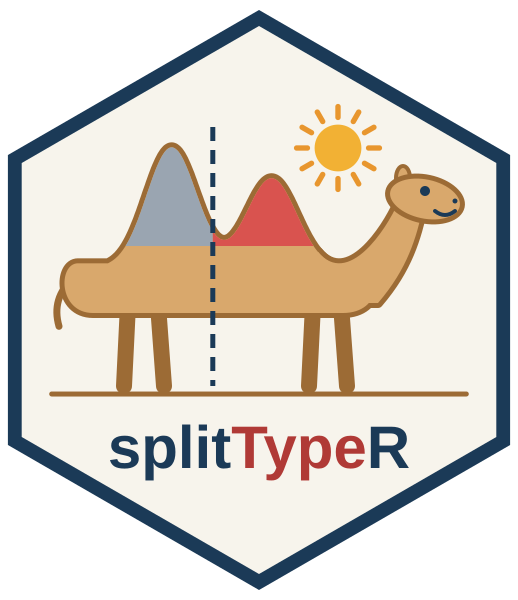

Replacement of the standardDeviation slot in a SplitTypeRdata object
Source: R/splitTypeRdata_class.R
standardDeviation-set-SplitTypeRdata-method.RdA function for replacement of the standardDeviation slot in a
SplitTypeRdata class.
Usage
# S4 method for class 'SplitTypeRdata'
standardDeviation(x) <- valueExamples
## Two demo signatures
sign <- list("SignatureA"=c("EGFR", "CTTN", "ACTB"),
"SignatureB"=c("ACTR2", "AKT1"))
## Create a SplitTypeRdata object with the signatures
demo <- new("SplitTypeRdata", signatures=sign)
## Create standard deviations
demoSD <- list()
demoSD[[names(sign)[1]]] <- c(0.01748988, 0.08992500, 0.11781061, 0.0747440)
demoSD[[names(sign)[2]]] <- c(0.02058364, 0.08476766, 0.14783058, 0.1009961)
standardDeviation(demo) <- demoSD